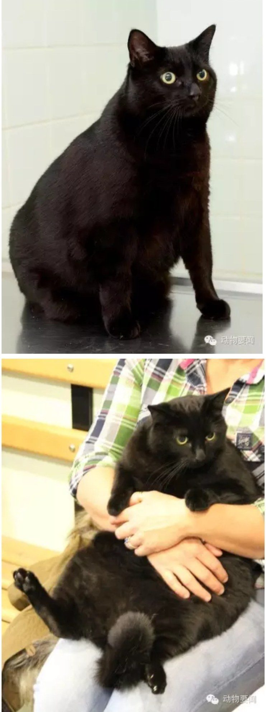
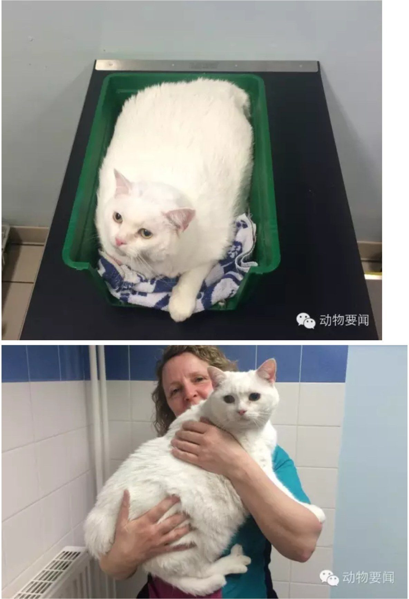
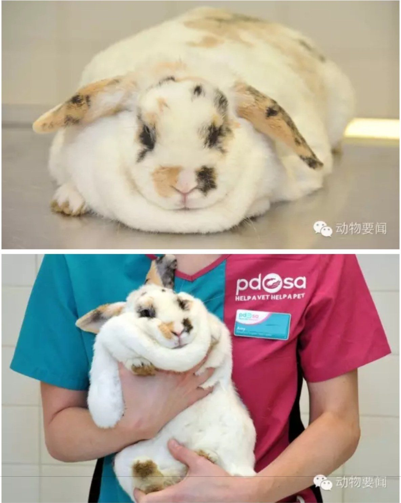
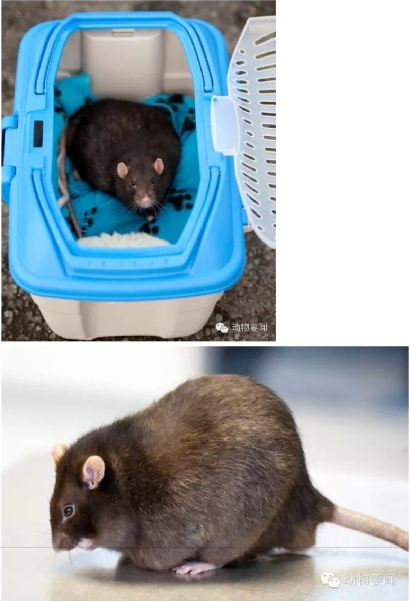

Guy
短毛家猫 · 8岁 · 现在10.9公斤 / 理想4.5公斤
据说主人不让他出门，也不喜欢他乱动，所以越来越懒的！
看完狗狗选手，今天轮到猫咪、兔子和老鼠。主办方PDSA还是那个态度：胖不是可爱，是病，得减——但选手们显然各有想法。
据说主人不让他出门，也不喜欢他乱动，所以越来越懒的！
过去两年突然发胖。主人家好几只猫，其他都瘦瘦的，而Boycus变胖之后就懒馋不爱运动了，主人怎么努力都没有用呢。
Ollie没什么特别的，就是爱吃肉！吃不够！
每天吃完自己的，还要吃别的兔子的饭…………
据说发胖原因是水果和饼干吃太多，最近只能吃草了。。
这就是一只胖老鼠。。。。



